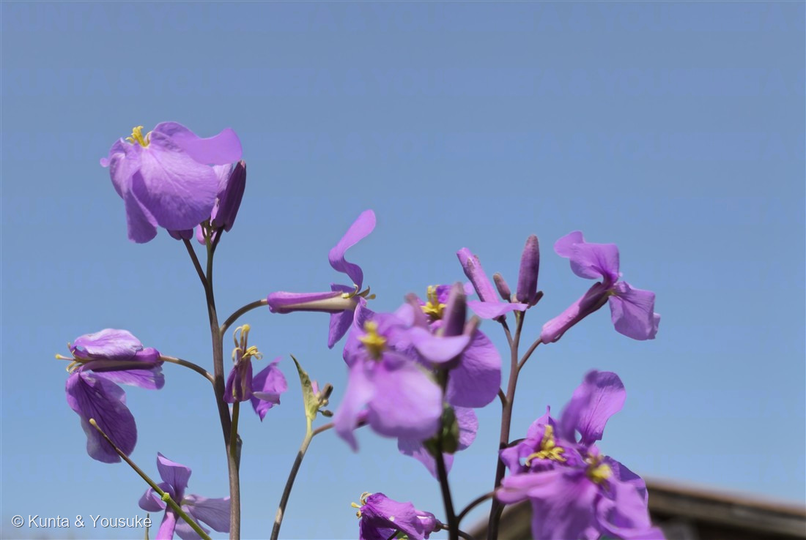
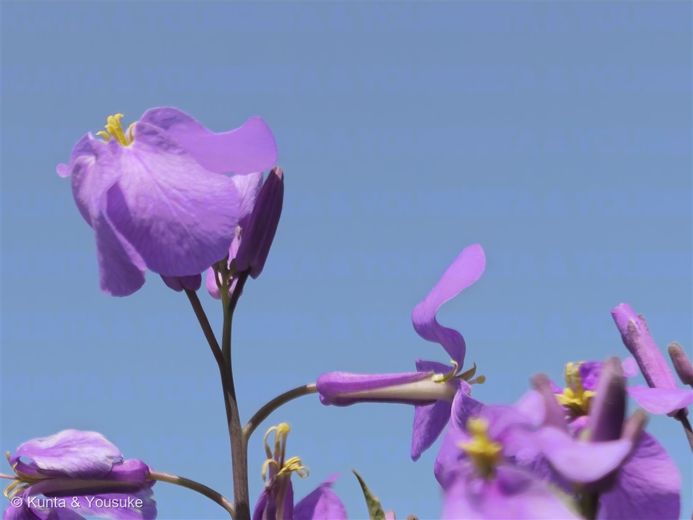

地図を読み込んでいるよ…
🔍 写真も地図も、押しているあいだ拡大して見られるよ（スマホは指を置いてすこし待ってね）。
🌍 の地図＝この子がもともと自生している場所を緑に。中国東部（東北・華北地区ではふつうに見られる）。日本へは江戸時代に渡来し、いまは全国に帰化している。
⭐中国がふるさと。⚠地図は中国ぜんぶを塗っているけれど、じつは東部の子で、東北地区と華北地区でふつうに見られるんだ。⭐日本へは江戸時代に渡ってきて、いまは全国に帰化している（だから日本は塗っていない）。⭐諸葛孔明が陣を張るたびに種をまいたという言い伝えから「ショカツサイ（諸葛菜）」とも呼ばれるよ。
⚠ 地図は国（日本と中国だけ県・省）までしか塗れないから、ほんとうの分布より広く見えていることがあるよ。地図はだいたいの場所。正確なところは、上の文を見てね。
ムラサキハナナ（紫花菜）
Orychophragmus violaceus (L.) O.E.Schulz
別名 · オオアラセイトウ（標準和名）／ショカツサイ（諸葛菜）／ハナダイコン 原産 · 中国東部／ 見どころ · ⭐三つの名前・諸葛孔明が種をまいたという伝説・4枚の花びらの十字・スジグロシロチョウを支える
アブラナ科 · Brassicaceae（オオアラセイトウ属 Orychophragmus・アブラナ目）
名前と学名の由来 ── 三つの名前を持つ草
⭐この子は、日本語の名前を3つも持っているんだ。しかも、それぞれ由来がぜんぜんちがう。
- ⭐ムラサキハナナ（紫花菜）＝紫の、菜の花。──アブラナ科の花は黄色いものが多いから、「紫の菜の花」という、見たままの名前。
- オオアラセイトウ（大紫羅欄花）＝これが標準和名（図鑑の正式な名前）。「アラセイトウ」はストック（Matthiola）の和名で、それに似て大きいから。
- ⭐⭐ショカツサイ（諸葛菜）＝⭐三国志の諸葛孔明（しょかつ こうめい）が、陣を張るたびにこの草の種をまいた、という言い伝えから。──兵の食べものにするために、行く先々でまいたのだとか。⭐戦の話が、道ばたの紫の花の名前になって残っているんだ。
- ハナダイコンとも呼ばれる（花がダイコンの花に似ているから）。⚠でも「ハナダイコン」という和名は、Hesperis matronalis という別の植物の正式名でもあるので、まぎらわしい名前だよ。
- 属名 Orychophragmus＝ギリシャ語で「掘る・裂ける」＋「仕切り」から、実の中の仕切りにちなむとされる。種小名 violaceus（ウィオラケウス）＝「すみれ色の」。⭐156サンシキスミレ（Viola）と、名前がとなり合っているね。
この植物のこと ── 4枚の花びらの十字
- アブラナ科の越年草。⭐アブラナ科は100 シロイヌナズナと同じ科だよ。──燻太さんが研究で毎日むきあっているモデル植物と、道の駅の道ばたの紫の花が、同じ家族なんだ。
- ⭐アブラナ科の目じるしは「4枚の花びらが十字に開く」（だから昔は「十字花科」と呼ばれた）。⭐写真②で、きれいな十字になっているのが見えるよ。⭐そして、おしべは6本で、そのうち4本が長く2本が短い——これもアブラナ科ぜんぶに共通する体のつくり。
- 花は直径1〜2cm、薄紫で、花弁に細い紋様（脈）が入る。3月から5月に咲く。⭐写真①の、花のあいだから細長くつき出ている棒が、若い実（角果／かくか）だよ。熟すと細長いさやになって、中に黒褐色のタネが並ぶ。
- 江戸時代に中国から渡来して、いまは全国に帰化している。土手や河原、道ばたで、春に紫の群れをつくる。
- ⭐スジグロシロチョウという白いチョウが、この草を食草にしている。⭐この植物がふえたことで、そのチョウも助けられているんだって。──よそから来た草が、日本のチョウをささえている。外来種の話は「悪者」で終わりがちだけど、⭐そう単純じゃないんだね。
同定について ── 4枚か、5枚か
- ⭐決め手＝薄紫の花弁が4枚、十字に開く＋まん中の葯が黄色＋細長い角果。これでアブラナ科のこの子に決まる。
- ⚠156 サンシキスミレ＝同じ紫でも花弁5枚で、上2・側2・下1の並び。しかもうしろに距がのびる。
- ⚠ハナダイコン（Hesperis matronalis）＝名前がまぎらわしい別の植物。葉が裂けず、細長い卵形で、夜に強く香る。
- ⚠ダイコンやハマダイコン（おまけの子）＝おなじアブラナ科で、うすい紫の4弁花をつける。⭐「ハナダイコン」という別名が、なぜダイコンなのか——それを確かめるなら、この子と見くらべるのがいちばん早いよ。
⭐ 空を背にして
参考：Wikipedia「オオアラセイトウ」（アブラナ科オオアラセイトウ属／和名オオアラセイトウ・別名ムラサキハナナ・ショカツサイ／ショカツサイは諸葛亮が陣を張るときにこの植物の種を播いたという伝説から／原産地は中国で東部に分布し、東北および華北地区では普通に見られる／江戸時代に渡来し全国に帰化／花期3〜5月・薄紫色の花弁には細い紋様がある・4枚の花弁が十字／根生葉は深く裂け基部は心形／果実は4稜のある細長い角果で黒褐色の種子／分布の拡大がスジグロシロチョウの個体群を支えている）。